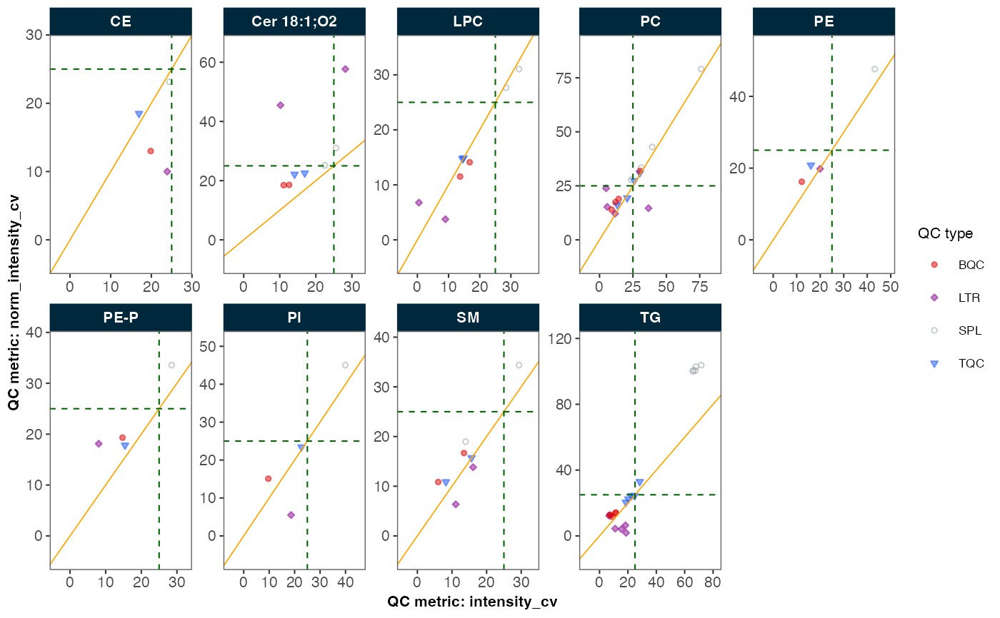

Compare Feature Variability Before and After Normalization
Source:R/plots-qc-cv.R
plot_normalization_qc.RdEvaluates the effectiveness of normalization by comparing feature variability (measured as %CV) in QC and/or study samples before and after normalization. The comparison is visualized through one of three plot types:
Scatter plot: CV values before vs after normalization
Difference plot: (CV after - CV before) vs mean CV
Ratio plot: log2 of (CV after / CV before) vs mean CV
Features can be grouped and visualized by their fature class using facets.
The resulting visualization helps assess whether normalization improved measurement precision across different features and sample/QC types.
Usage
plot_normalization_qc(
data = NULL,
before_norm_var,
after_norm_var,
plot_type,
qc_types = NA,
facet_by_class = FALSE,
y_shared = FALSE,
filter_data = FALSE,
include_qualifier = FALSE,
cv_threshold_value = 25,
x_lim = c(0, NA_real_),
y_lim = c(0, NA_real_),
cols_page = 5,
point_size = 1,
point_alpha = 0.5,
font_base_size = 8
)Arguments
- data
A
MRMhubExperimentobject- before_norm_var
A string specifying the variable from the QC metrics table to be used for the x-axis (before normalization).
- after_norm_var
A string specifying the variable from the QC metrics table to be used for the y-axis (after normalization).
- plot_type
A character string specifying the type of plot to generate. Must be one of "scatter", "diff", or "ratio". Selecting "scatter" plots the before and after normalization CV values as a scatter plot, "diff" plots the difference between the two CV values against the average CV, and "ratio" plots the log2 ratio of the two CV values against the average CV.
- qc_types
A character vector specifying the QC types to plot. It must contain at least one element. The default is
NA, which means any of the non-blank QC types ("SPL", "TQC", "BQC", "HQC", "MQC", "LQC", "NIST", "LTR") will be plotted if present in the dataset.- facet_by_class
If
TRUE, facets the plot byfeature_class, as defined in the feature metadata.Logical; if
TRUE, all facets share the same y-axis scale. IfFALSE(default), each facet has its own y-axis scale.- filter_data
Whether to use all data (default) or only QC-filtered data (filtered via
filter_features_qc()).- include_qualifier
Whether to include qualifier features (default is
TRUE).- cv_threshold_value
Numerical threshold value to be shown as dashed lines in the plot (default is
25).- x_lim
Numeric vector of length 2 for x-axis limits. Use
NAfor auto-scaling (default isc(0, NA)).- y_lim
Numeric vector of length 2 for y-axis limits. Use
NAfor auto-scaling (default isc(0, NA)).- cols_page
Number of facet columns per page, representing different feature classes (default is
5). Only used iffacet_by_class = TRUE.- point_size
Size of points in millimeters (default is
1).- point_alpha
Transparency of points (default is
0.5).- font_base_size
Base font size in points (default is
8).
Value
A ggplot2 object representing the scatter plot comparing CV values
before and after normalization.
Details
The function preselects the corresponding variables from the QC metrics and uses
plot_qcmetrics_comparison() to visualize the results.
The data must be normalized before using
normalize_by_istd()followed by calculation of the QC metrics table viacalc_qc_metrics()orfilter_features_qc(), see examples below.When
facet_by_class = TRUE, then thefeature_classmust be defined in the metadata or retrieved via specific functions, e.g.,parse_lipid_feature_names().
Examples
# Example usage:
mexp <- lipidomics_dataset
mexp <- normalize_by_istd(mexp)
#> ! Interfering features defined in metadata, but no correction was applied. Use `correct_interferences()` to correct.
#> ✔ 20 features normalized with 9 ISTDs in 499 analyses.
mexp <- calc_qc_metrics(mexp)
plot_normalization_qc(
data = mexp,
before_norm_var = "intensity",
after_norm_var = "norm_intensity",
plot_type = "scatter",
qc_type = "SPL",
filter_data = FALSE,
facet_by_class = TRUE,
cv_threshold_value = 25
)
